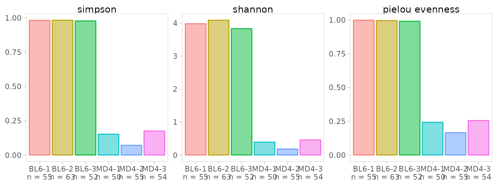
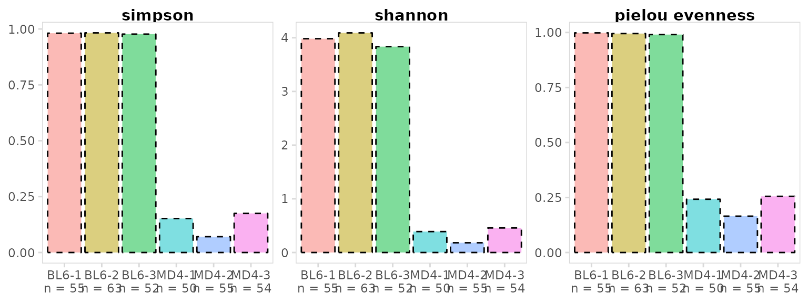
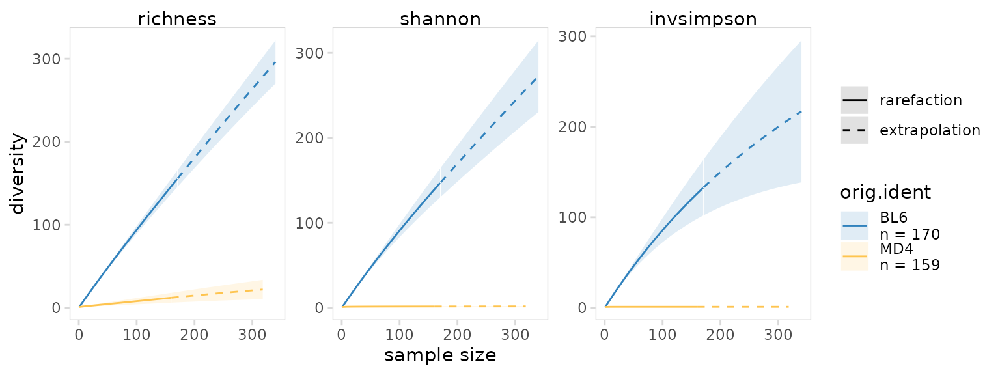
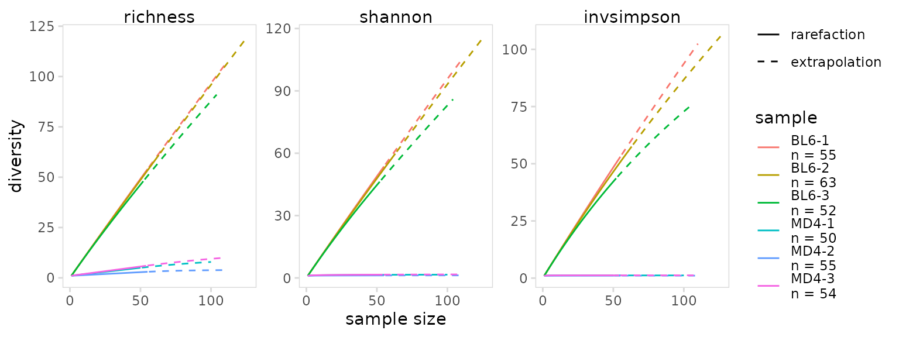

This vignette provides detailed examples for quantifying repertoire diversity. For the examples shown below, we use data for splenocytes from BL6 and MD4 mice collected using the 10X Genomics scRNA-seq platform. MD4 B cells are monoclonal and specifically bind hen egg lysozyme.
library(djvdj)
library(Seurat)
library(ggplot2)
# Add V(D)J data to object
vdj_dirs <- c(
BL6 = system.file("extdata/splen/BL6_BCR", package = "djvdj"),
MD4 = system.file("extdata/splen/MD4_BCR", package = "djvdj")
)
so <- splen_so |>
import_vdj(vdj_dirs, define_clonotypes = "cdr3_gene")Calculating diversity
To calculate repertoire diversity and store the results in the object
meta.data, the calc_diversity() function can be used. This
function is designed to specifically work with the R package abdiv. The diversity
metric can be selected by passing the name of the function to the
method argument. Any alpha diversity function from the
abdiv package that takes species counts as input can be used. Be sure to
read the documentation for the function you are using to ensure it is
appropriate for your analysis.
In this example we are calculating the Shannon entropy for BL6 and MD4 samples.
so_vdj <- so |>
calc_diversity(
data_col = "clonotype_id",
cluster_col = "sample",
method = abdiv::shannon
)Estimations of species diversity are influenced by sample size. One
approach to address this is to equalize the number of cells present in
each cluster. The downsample argument will randomly sample
cells so each sample being tested has the same number of cells as the
smallest cluster. The bootstrapped standard error can also be calculated
by setting the number of bootstrap samples with the n_boots
argument.
so_vdj <- so |>
calc_diversity(
data_col = "clonotype_id",
cluster_col = "sample",
downsample = TRUE,
n_boots = 50
)Diversity metrics can also be calculated for a specific chain. To do
this, the column passed to the data_col argument must
contain per-chain data, such as CDR3 amino acid or nucleotide sequences.
In this example diversity is calculated based only on heavy chain CDR3
sequences.
so_vdj <- so |>
calc_diversity(
data_col = "cdr3_nt",
cluster_col = "sample",
chain = "IGH"
)Plotting diversity
The plot_diversity() function will create plots
summarizing repertoire diversity for each sample. A named list of
functions can also be passed to plot multiple metrics. Two metrics for
measuring diversity are the Simpson index and Shannon entropy. Both of
these metrics are influenced by species richness (number of unique
sequences) and evenness (relative abundance of sequences). Pielou’s
index will specifically measure species evenness. For these metrics,
maximally diverse samples will return a value of 1.
As expected, BL6 B cells have a very diverse repertoire, while MD4 cells have a restricted repertoire.
div_fns <- list(
"simpson" = abdiv::simpson,
"shannon" = abdiv::shannon,
"pielou evenness" = abdiv::pielou_e
)
so |>
plot_diversity(
data_col = "clonotype_id",
cluster_col = "sample",
method = div_fns
)
Diversity plots can also be separated based on an additional grouping
variable such as treatment group (e.g. pacebo vs drug) or disease status
(e.g. healthy vs disease). This will generate boxplots with each point
representing a label present in the cluster_col column. In
this example we have 3 BL6 and 3 MD4 samples, so there should be 5
points shown for each boxplot.
so |>
plot_diversity(
data_col = "clonotype_id",
cluster_col = "sample",
group_col = "orig.ident",
method = div_fns
)Additional arguments are provided to adjust plot aesthetics. The
plot_colors parameter can be used to modify colors, the
panel_nrow and panel_scales arguments will
adjust the plot scales and number of rows used to arrange plots.
so |>
plot_diversity(
data_col = "clonotype_id",
cluster_col = "sample",
group_col = "orig.ident",
method = div_fns,
plot_colors = c(BL6 = "#3182bd", MD4 = "#fec44f"),
panel_nrow = 2
)plot_diversity() returns a ggplot object that can be
modified with ggplot2 functions such as ggplot2::theme().
Plots can be further adjusted by passing aesthetic parameters directly
to ggplot2, e.g. alpha, linetype,
color, etc.
so |>
plot_diversity(
data_col = "clonotype_id",
cluster_col = "sample",
method = div_fns,
alpha = 0.5, # parameters to pass to ggplot2
linetype = 2,
color = "black"
) +
theme(strip.text = element_text(face = "bold"))
Rarefaction curves
Another approach to ensure differences in sample size are not having an undue influence on diversity results is to plot rarefaction curves. This method involves calculating species diversity for different sized samples generated by randomly downsampling each cluster. By default the bootstrapped 95% confidence interval will also be plotted.
Calculations used to generate rarefaction curves are performed using
the iNEXT package. There are three diversity calculations that can be
specified with the method argument:
- ‘richness’, species richness, this is equivalent to the calculation
performed by
abdiv::richness() - ‘shannon’, the exponential of Shannon entropy
- ‘invsimpson’, the inverse Simpson index, this is equivalent to the
calculation performed by
abdiv::invsimpson()
so |>
plot_rarefaction(
data_col = "clonotype_id",
cluster_col = "orig.ident",
method = c("richness", "shannon", "invsimpson"),
plot_colors = c("#3182bd", "#fec44f")
)
If the 95% confidence interval is not desired, set
n_boots to 0. In this example we also plot a separate line
for each BL6 and MD4 sample.
so |>
plot_rarefaction(
data_col = "clonotype_id",
cluster_col = "sample",
method = c("richness", "shannon", "invsimpson"),
n_boots = 0
)
Session info
#> R version 4.2.3 (2023-03-15)
#> Platform: x86_64-pc-linux-gnu (64-bit)
#> Running under: Ubuntu 22.04.2 LTS
#>
#> Matrix products: default
#> BLAS: /usr/lib/x86_64-linux-gnu/openblas-pthread/libblas.so.3
#> LAPACK: /usr/lib/x86_64-linux-gnu/openblas-pthread/libopenblasp-r0.3.20.so
#>
#> locale:
#> [1] LC_CTYPE=C.UTF-8 LC_NUMERIC=C LC_TIME=C.UTF-8
#> [4] LC_COLLATE=C.UTF-8 LC_MONETARY=C.UTF-8 LC_MESSAGES=C.UTF-8
#> [7] LC_PAPER=C.UTF-8 LC_NAME=C LC_ADDRESS=C
#> [10] LC_TELEPHONE=C LC_MEASUREMENT=C.UTF-8 LC_IDENTIFICATION=C
#>
#> attached base packages:
#> [1] stats graphics grDevices utils datasets methods base
#>
#> other attached packages:
#> [1] ggplot2_3.4.1 SeuratObject_4.1.3 Seurat_4.3.0
#> [4] djvdj_0.1.0
#>
#> loaded via a namespace (and not attached):
#> [1] backports_1.4.1 circlize_0.4.15
#> [3] systemfonts_1.0.4 plyr_1.8.8
#> [5] igraph_1.4.1 lazyeval_0.2.2
#> [7] sp_1.6-0 splines_4.2.3
#> [9] listenv_0.9.0 scattermore_0.8
#> [11] GenomeInfoDb_1.34.9 digest_0.6.31
#> [13] foreach_1.5.2 htmltools_0.5.5
#> [15] fansi_1.0.4 magrittr_2.0.3
#> [17] memoise_2.0.1 tensor_1.5
#> [19] cluster_2.1.4 doParallel_1.0.17
#> [21] ROCR_1.0-11 tzdb_0.3.0
#> [23] ComplexHeatmap_2.14.0 globals_0.16.2
#> [25] readr_2.1.4 matrixStats_0.63.0
#> [27] vroom_1.6.1 spatstat.sparse_3.0-1
#> [29] pkgdown_2.0.7 colorspace_2.1-0
#> [31] ggrepel_0.9.3 textshaping_0.3.6
#> [33] xfun_0.37 dplyr_1.1.1
#> [35] crayon_1.5.2 RCurl_1.98-1.10
#> [37] jsonlite_1.8.4 spatstat.data_3.0-1
#> [39] progressr_0.13.0 survival_3.5-3
#> [41] zoo_1.8-11 iterators_1.0.14
#> [43] glue_1.6.2 polyclip_1.10-4
#> [45] gtable_0.3.3 zlibbioc_1.44.0
#> [47] XVector_0.38.0 leiden_0.4.3
#> [49] GetoptLong_1.0.5 DelayedArray_0.24.0
#> [51] future.apply_1.10.0 shape_1.4.6
#> [53] SingleCellExperiment_1.20.1 BiocGenerics_0.44.0
#> [55] abind_1.4-5 scales_1.2.1
#> [57] spatstat.random_3.1-4 miniUI_0.1.1.1
#> [59] Rcpp_1.0.10 viridisLite_0.4.1
#> [61] xtable_1.8-4 clue_0.3-64
#> [63] reticulate_1.28 bit_4.0.5
#> [65] stats4_4.2.3 htmlwidgets_1.6.2
#> [67] httr_1.4.5 RColorBrewer_1.1-3
#> [69] ellipsis_0.3.2 ica_1.0-3
#> [71] farver_2.1.1 pkgconfig_2.0.3
#> [73] uwot_0.1.14 deldir_1.0-6
#> [75] sass_0.4.5 utf8_1.2.3
#> [77] labeling_0.4.2 tidyselect_1.2.0
#> [79] rlang_1.1.0 reshape2_1.4.4
#> [81] later_1.3.0 munsell_0.5.0
#> [83] tools_4.2.3 cachem_1.0.7
#> [85] cli_3.6.1 generics_0.1.3
#> [87] broom_1.0.4 ggridges_0.5.4
#> [89] evaluate_0.20 stringr_1.5.0
#> [91] fastmap_1.1.1 goftest_1.2-3
#> [93] yaml_2.3.7 ragg_1.2.5
#> [95] bit64_4.0.5 knitr_1.42
#> [97] fs_1.6.1 fitdistrplus_1.1-8
#> [99] purrr_1.0.1 RANN_2.6.1
#> [101] nlme_3.1-162 pbapply_1.7-0
#> [103] future_1.32.0 mime_0.12
#> [105] compiler_4.2.3 plotly_4.10.1
#> [107] png_0.1-8 spatstat.utils_3.0-2
#> [109] abdiv_0.2.0 tibble_3.2.1
#> [111] bslib_0.4.2 stringi_1.7.12
#> [113] highr_0.10 desc_1.4.2
#> [115] lattice_0.20-45 Matrix_1.5-3
#> [117] vctrs_0.6.1 pillar_1.9.0
#> [119] lifecycle_1.0.3 spatstat.geom_3.1-0
#> [121] lmtest_0.9-40 jquerylib_0.1.4
#> [123] GlobalOptions_0.1.2 RcppAnnoy_0.0.20
#> [125] data.table_1.14.8 cowplot_1.1.1
#> [127] bitops_1.0-7 irlba_2.3.5.1
#> [129] ggtrace_0.2.0 httpuv_1.6.9
#> [131] patchwork_1.1.2 GenomicRanges_1.50.2
#> [133] R6_2.5.1 promises_1.2.0.1
#> [135] gridExtra_2.3 KernSmooth_2.23-20
#> [137] IRanges_2.32.0 parallelly_1.35.0
#> [139] codetools_0.2-19 boot_1.3-28.1
#> [141] MASS_7.3-58.2 SummarizedExperiment_1.28.0
#> [143] rprojroot_2.0.3 rjson_0.2.21
#> [145] withr_2.5.0 iNEXT_3.0.0
#> [147] sctransform_0.3.5 S4Vectors_0.36.2
#> [149] GenomeInfoDbData_1.2.9 parallel_4.2.3
#> [151] hms_1.1.3 grid_4.2.3
#> [153] tidyr_1.3.0 rmarkdown_2.20
#> [155] MatrixGenerics_1.10.0 Rtsne_0.16
#> [157] spatstat.explore_3.1-0 Biobase_2.58.0
#> [159] shiny_1.7.4